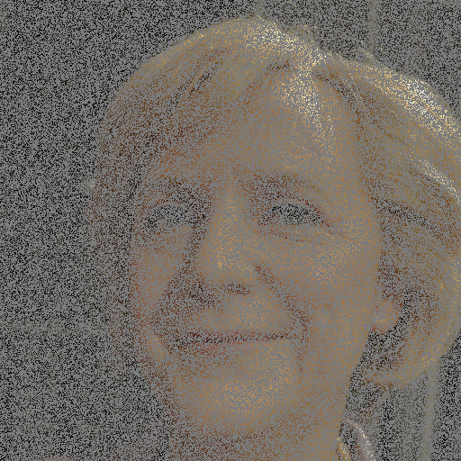
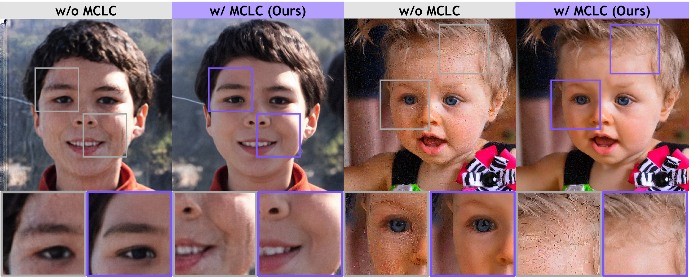
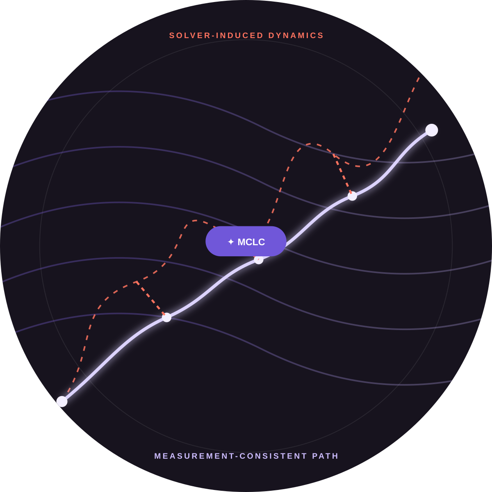
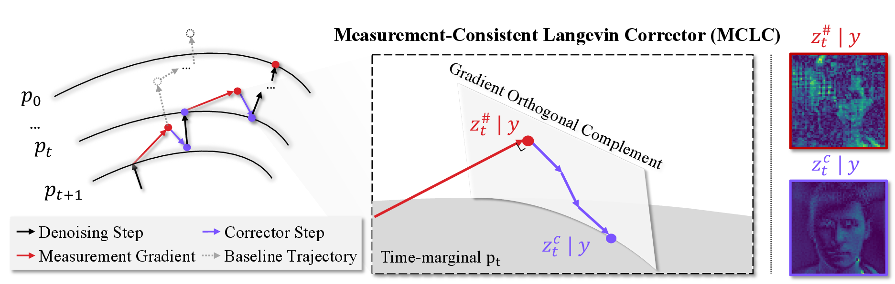
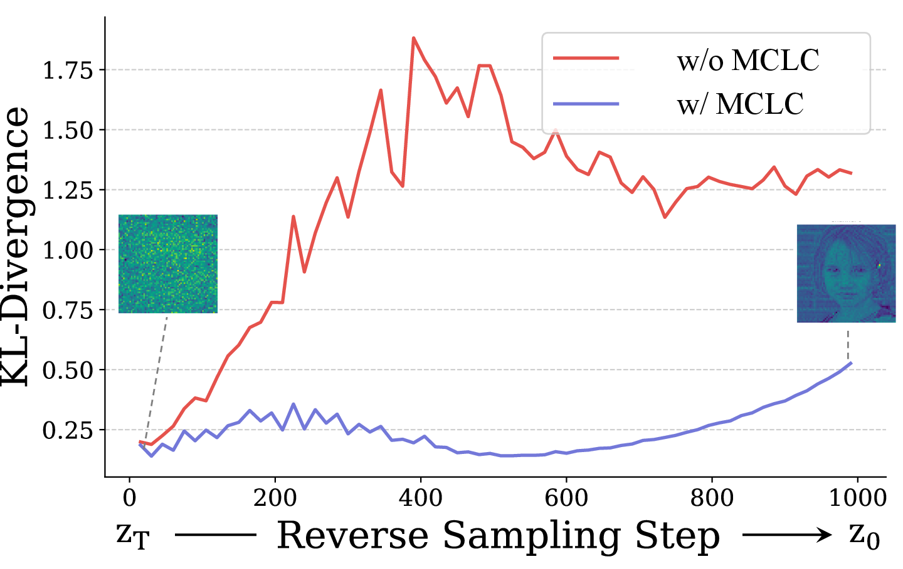
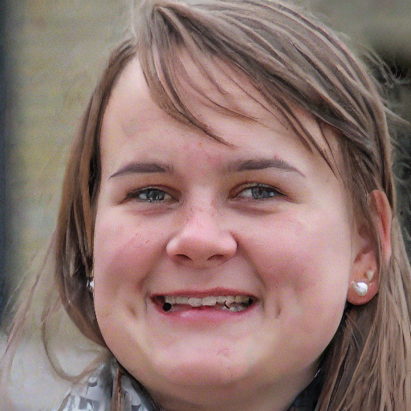
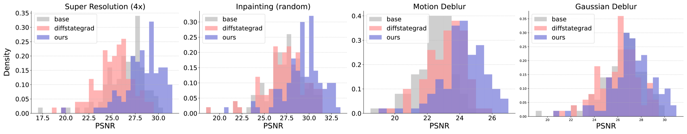

Random Inpainting

↔
1KAIST 2Sookmyung Women’s University †Co-corresponding authors
ICML 2026
TL;DR: MCLC stabilizes latent diffusion inverse solvers by reducing the distributional gap in solver-induced dynamics without sacrificing measurement consistency.


While latent diffusion models (LDMs) have emerged as powerful priors for inverse problems, existing LDM-based solvers frequently suffer from instability. We identify the instability as a discrepancy between solver dynamics and stable reverse diffusion dynamics learned by the diffusion model, and show that reducing this gap stabilizes the solver.
We introduce Measurement-Consistent Langevin Corrector (MCLC), a theoretically grounded plug-and-play stabilization module that remedies LDM-based inverse problem solvers through measurement-consistent Langevin updates. Unlike prior approaches relying on linear manifold assumptions, MCLC provides a principled stabilization mechanism for latent space.

After the measurement-consistency step, MCLC applies a Langevin correction in the subspace orthogonal to the measurement gradient. The correction moves deviated solver dynamics toward the diffusion model’s time-marginal distribution while preserving measurement consistency up to a controlled bound.

Explicit instability. We characterize instability as deviation from stable reverse diffusion dynamics.
Principled correction. Langevin dynamics monotonically reduce the distributional discrepancy.
Measurement consistency. Orthogonal projection prevents the corrector from undoing the inverse solver’s measurement update.
Measurements are fixed on the left. Drag each divider to compare Base (left) and Ours (right).


Results on FFHQ using ReSample as the base solver. MCLC particularly improves perceptual quality and reduces regional artifacts.
| Task | Method | PSNR ↑ | LPIPS ↓ | FID ↓ | P-FID ↓ |
|---|---|---|---|---|---|
| Gaussian Deblur | Base | 26.44 | 0.368 | 75.17 | 148.11 |
| Ours | 27.25 | 0.353 | 78.38 | 106.16 | |
| Motion Deblur | Base | 22.45 | 0.635 | 108.14 | 174.52 |
| Ours | 24.24 | 0.588 | 102.02 | 118.87 | |
| Super Resolution | Base | 26.40 | 0.347 | 70.16 | 133.15 |
| Ours | 28.32 | 0.236 | 53.85 | 78.08 | |
| Random Inpainting | Base | 27.27 | 0.374 | 103.17 | 133.80 |
| Ours | 29.35 | 0.235 | 75.65 | 108.27 |
Beyond improving average reconstruction quality, MCLC reduces severe solver failures. The PSNR distributions consistently shift toward higher values across inverse problems.

@inproceedings{lee2026mclc,
title={Measurement-Consistent Langevin Corrector for Stabilizing Latent Diffusion Inverse Problem Solvers},
author={Lee, Hyoseok and Lim, Sohwi and Cha, Eunju and Oh, Tae-Hyun},
booktitle={Proceedings of the 43rd International Conference on Machine Learning},
year={2026}
}